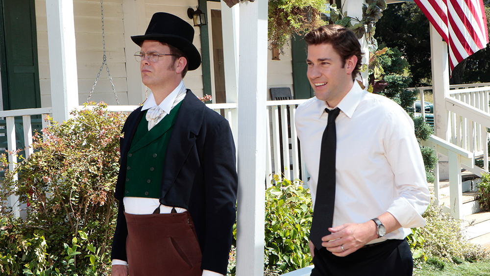

What’s more dangerous: a baler and a forklift or carpal tunnel and depression brought on by years of slogging it out in the hovels of corporate America? Michael Scott’s willing to throw himself off the roof of his office building — with only a bouncy house to break his fall — to prove it’s the latter.
Season 8 definitely hit some rough spots after Michael’s move to Colorado, but the “Garden Party” episode is a bright spot in the search for its footing. Though many begrudge the attempt to turn Andy into the new Michael, this episode in which he throws a party on Dwight’s farm to impress his parents makes you feel for him. James Spader’s profound speech as Robert California gives us one of the character’s stand-out scenes on the show — though nothing will top his “I’m the fucking lizard king” moment. Plus the one-two punch of Dwight taking his party-throwing cues from a fake book Jim created and Mose playing the valet with parking skills that take him, let’s say, off the beaten path, makes for a solid entry.
Favorite Episode
Season 3, Episode 19 What’s more dangerous: a baler and a forklift or carpal tunnel and depression brought on by years of slogging it out in the hovels of corporate America? Michael Scott’s willing to throw himself off the roof of his office building — with only a bouncy house to break his fall — to prove it’s the latter.
Season 8, Episode 4 Season 8 definitely hit some rough spots after Michael’s move to Colorado, but the “Garden Party” episode is a bright spot in the search for its footing. Though many begrudge the attempt to turn Andy into the new Michael, this episode in which he throws a party on Dwight’s farm to impress his parents makes you feel for him. James Spader’s profound speech as Robert California gives us one of the character’s stand-out scenes on the show — though nothing will top his “I’m the fucking lizard king” moment. Plus the one-two punch of Dwight taking his party-throwing cues from a fake book Jim created and Mose playing the valet with parking skills that take him, let’s say, off the beaten path, makes for a solid entry.
Please submit your entries to episodes@theofficeisgreat.com